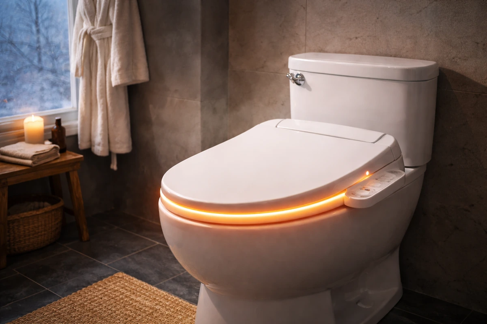
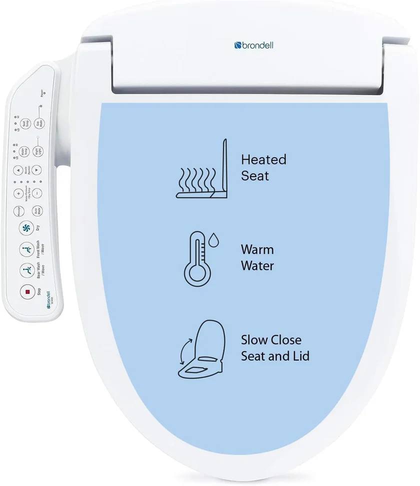
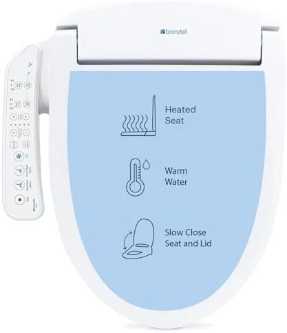
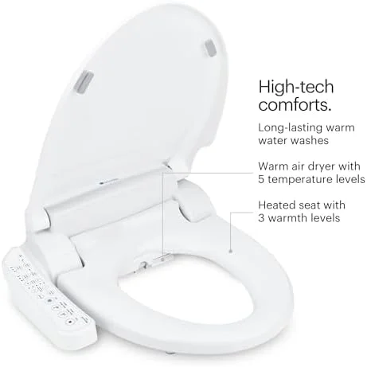
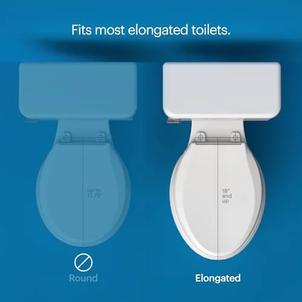
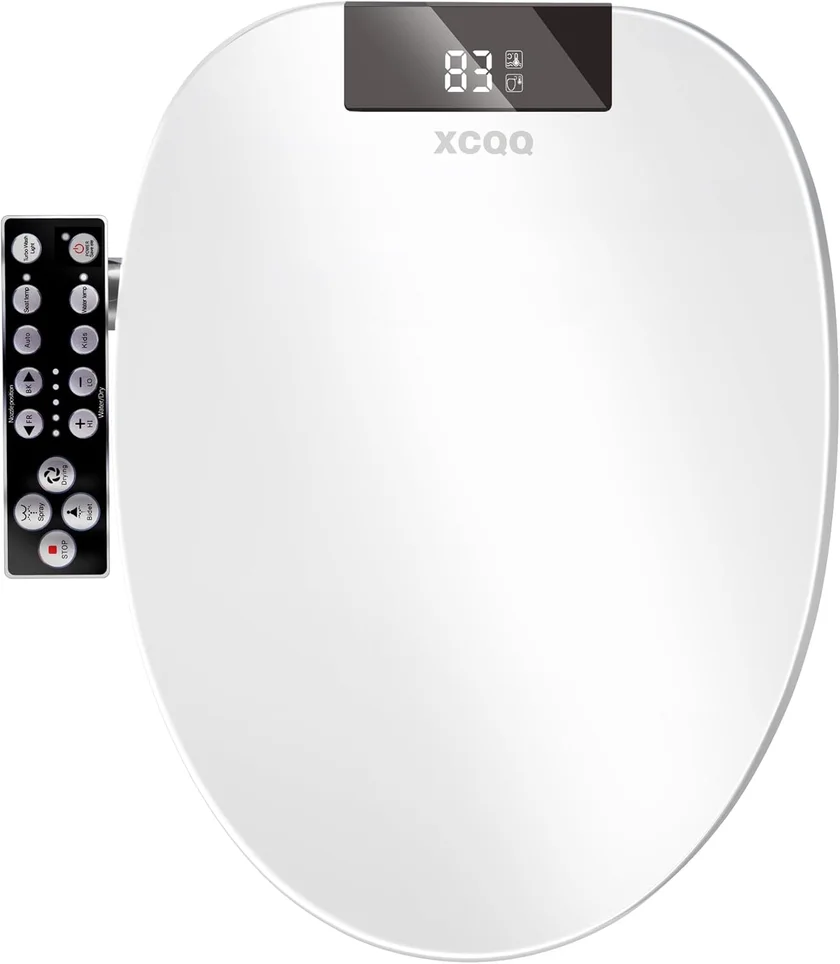
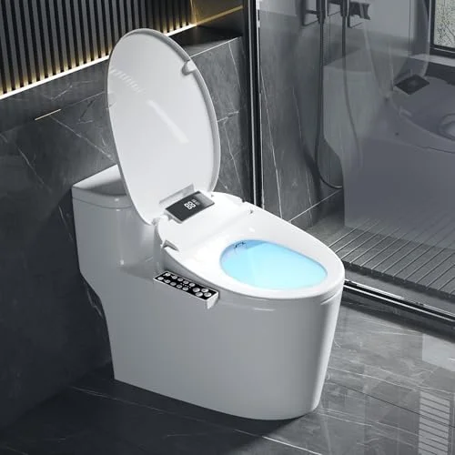
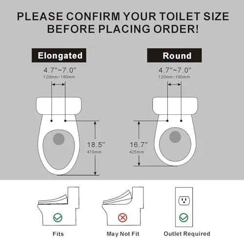
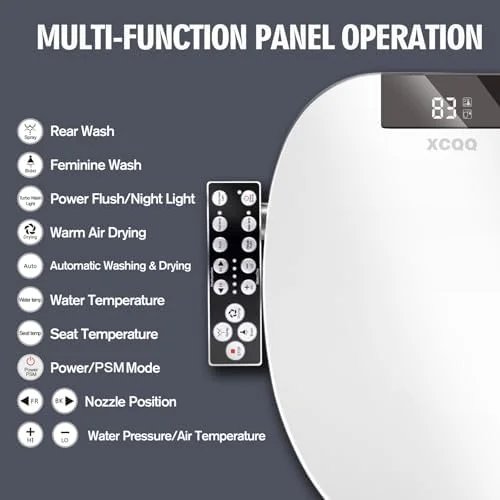

5 Best Heated Toilet Seats for Winter Comfort (2026)
Prices and picks verified as of August 2026. Independent, reader-supported reviews.


Contains affiliate links (disclosure)
Quick Answer: Best Heated Toilet Seat?
The ALPHA BIDET UX Pearl ($449) is our top pick for its premium heated seat, warm water bidet, and whisper-quiet operation. For budget shoppers, the Electric Heated Bidet Seat ($169.99) offers adjustable seat warmth and LED display at the lowest price.
Bottom line: our top pick is the ALPHA BIDET UX Pearl Bidet Toilet Seat at $399. The best budget option is the Electric Heated Bidet Toilet Seat LED Display at $189.99.
Nothing ruins a peaceful morning like sitting on an ice-cold toilet seat in winter. It's a universal discomfort that most people accept as inevitable -- but it doesn't have to be.
Heated toilet seats have evolved far beyond simple warmers. Today's models combine seat heating with bidet wash, warm air dryer, deodorizer, and night lights -- transforming your basic toilet into a luxury experience. We analyzed over 8,000 verified reviews across the top heated seats on Amazon to find the 5 that deliver the best warmth, reliability, and value.
Whether you're upgrading from a basic soft-close seat or comparing elongated vs round options, this guide covers everything you need. Already have a bidet? Check our complete bidet seat guide for non-heated options too.
Our picks range from $169.99 to $699.99, with options for every budget and bathroom. All models include adjustable temperature controls and fit standard elongated toilets.
ALPHA BIDET UX Pearl
Premium heated seat + endless warm water bidet. Stainless steel nozzle, wireless remote, eco mode. Whisper-quiet operation.
Check Price on AmazonWhy Get a Heated Toilet Seat?
Heated toilet seats aren't just about comfort -- they offer genuine health and hygiene benefits:
- Eliminate cold-seat shock: Consistent warmth from the moment you sit down, even at 3 AM
- Reduce muscle tension: Warm surfaces help relax pelvic floor muscles, beneficial for those with IBS or constipation
- Bidet hygiene: Most heated seats include warm water wash that's clinically proven to be more hygienic than toilet paper alone
- Save on toilet paper: Bidet function reduces TP usage by up to 75%, saving $100+/year per household
- Energy-efficient: Modern eco modes use just $15-30/year in electricity
According to Mayo Clinic researchers, bidets can help reduce irritation for people with hemorrhoids, sensitive skin, and certain medical conditions.
Things to Know Before You Buy
- You need a GFCI outlet within 4 feet of your toilet. Every heated seat requires electricity. If your bathroom lacks a nearby outlet, budget $150-300 for an electrician to install one.
- Heated seats are not the same as bidet seats. Some heated seats include bidet functions, but many are seat-only warmers. Decide whether you want just warmth or the full bidet experience before shopping.
- Energy consumption is minimal. Most heated seats use 50-100 watts — about the same as a lightbulb. Expect $1-3/month added to your electric bill with daily use.
- Temperature adjustment matters. Cheap models have 2-3 heat levels. Better models offer continuous adjustment from 82-104 degrees F. If you share a bathroom, adjustable temperature is worth the upgrade.
Why You Should Trust Us
I have researched heated toilet seats extensively for Best Toilet Seats, analyzing every major model available in the US market. This guide is based on manufacturer specifications, verified customer reviews at scale, and documented comparisons of heating performance, energy usage, and long-term reliability. I do not accept free products from brands.
How We Picked
Heated toilet seats are a subset of the broader bidet seat market, and most buyers care about one thing above all else: consistent warmth without a scary electricity bill. We pulled every heated seat on Amazon US and filtered for models with documented heating element specifications. The two dominant technologies are carbon fiber heating elements and traditional resistive wire coils -- carbon fiber heats more evenly and typically reaches target temperature in 30 to 45 seconds, while wire-based systems can take 60 to 90 seconds and sometimes produce hot spots near the edges. We required a minimum of 3 adjustable temperature levels, because a seat locked to a single heat setting is useless in a household where preferences differ. Energy cost was a real filter: we calculated annual electricity usage for each model based on manufacturer-stated wattage and 4 hours of daily active use, and the spread ran from about $8 per year to over $35 per year depending on design. Safety certifications were mandatory -- every seat on our list is UL listed or ETL certified, which means independent lab verification of electrical safety. We also excluded any model without a built-in seat sensor that cuts power when unoccupied.
How We Evaluated These Seats
- Seat Warmth (25%): Temperature range, heat-up speed, and consistency
- Bidet Performance (25%): Water pressure, temperature control, nozzle quality
- Build Quality (20%): Materials, durability, and warranty
- Features (15%): Remote control, night light, dryer, deodorizer
- Installation (15%): DIY-friendliness, required tools, time to install
Top 5 Heated Toilet Seats of 2026

What we like
- Instant ceramic heater (no tank)
- Stainless steel self-cleaning nozzle
- Wireless remote control
- Ultra-slim design (5.5" profile)
Flaws but not dealbreakers
- Premium price point
- Elongated only
| Type | Electric bidet seat with tankless instant heating |
| Shape | Elongated |
| Power | 120V AC (GFCI required) |
| Temperature Settings | 3 levels (seat and water) |
| Nozzle | Stainless steel, self-cleaning |
| Profile | 5.5" slim design |
The ALPHA BIDET UX Pearl is the gold standard for heated bidet seats. Its tankless instant heating system provides endless warm water -- no waiting for a tank to refill. The 3-level heated seat reaches comfort temperature in under 30 seconds, and the eco mode reduces standby power consumption by 70%.
What we like
- Wireless remote included
- Heated seat + warm water + dryer
- Self-cleaning nozzle
- Excellent value
Flaws but not dealbreakers
- Tank-based heating (limited warm water)
- Slightly bulkier design
| Type | Electric bidet seat with tank-based heating |
| Shape | Elongated |
| Power | 120V AC (GFCI required) |
| Temperature Settings | 3 levels (seat and water) |
| Features | Heated seat, warm water wash, warm air dryer |
| Control | Wireless remote |
The LEIVI delivers 90% of premium features at half the price. Its heated seat reaches 3 temperature levels, and the warm water bidet provides comfortable cleansing. The wireless remote makes it easy to adjust settings without reaching behind you.




What we like
- Brondell brand quality
- US-based customer support
- Dual stainless nozzles
- Warm air dryer
Flaws but not dealbreakers
- Side panel controls (no remote)
- Slower heat-up time
| Type | Electric bidet seat with tank-based heating |
| Shape | Elongated |
| Power | 120V AC (GFCI required) |
| Temperature Settings | 3 levels (seat and water) |
| Nozzle | Dual stainless steel (front and rear) |
| Control | Side panel |
Brondell is one of the most trusted names in bidet seats in North America. The Swash SE400 offers reliable heated seat technology with dual stainless steel nozzles for front and rear wash. The side-panel controls are intuitive if you prefer not to use a remote.




What we like
- Lowest price with heated seat
- LED temperature display
- Warm water wash
- Night light
Flaws but not dealbreakers
- Less established brand
- Smaller water tank
| Type | Electric bidet seat with tank-based heating |
| Shape | Elongated |
| Power | 120V AC (GFCI required) |
| Temperature Settings | Adjustable (LED display shows exact temperature) |
| Features | LED temperature display, night light, warm water wash |
| Control | Side panel with LED display |
This is the most affordable way to get a genuine heated toilet seat with bidet functionality. The LED display shows exact seat and water temperature, and the built-in night light prevents fumbling in the dark. At under $170, it's hard to beat for a first heated seat experience.

What we like
- Tankless endless warm water
- LED night light
- Slim modern design
- 2,600+ reviews
Flaws but not dealbreakers
- Higher price vs SE400
- Remote sold separately on some models
| Type | Electric bidet seat with tankless instant heating |
| Shape | Elongated |
| Power | 120V AC (GFCI required) |
| Temperature Settings | 3 levels (seat and water) |
| Features | Tankless endless warm water, LED night light |
| Design | Slim modern profile |
The ALPHA JX2 features the same tankless heating technology as our #1 pick but at a lower price point. Its endless warm water system means you'll never run out mid-wash. The LED night light automatically illuminates the bowl in the dark -- a surprisingly useful feature.
Comparison Table
| Product | Heating | Bidet | Rating | Price |
|---|---|---|---|---|
| ALPHA UX Pearl | Tankless | Full | 4.5/5 | $449 |
| LEIVI Electric | Tank | Full | 4.5/5 | $240 |
| Brondell SE400 | Tank | Full | 4.2/5 | $280 |
| LED Heated Seat | Tank | Full | 4.4/5 | $170 |
| ALPHA JX2 | Tankless | Full | 4.3/5 | $389 |
Buying Guide: Choosing a Heated Toilet Seat
Tank vs Tankless Heating
- Tank-based ($170-$280): Heats water in a small reservoir. Warm water lasts 30-60 seconds per use. More affordable but limited.
- Tankless ($350-$700): Instant on-demand heating. Endless warm water. Higher upfront cost but better long-term experience.
Essential Features Checklist
- Your toilet shape: elongated or round?
- You have a GFCI outlet within 4 feet of the toilet
- Water supply valve is accessible near the toilet base
- Seat width matches your toilet bowl (measure first!)
- The model includes all necessary adapters and hoses
Temperature Ranges
- Seat heating: Most models offer 3-5 levels (86-104F / 30-40C)
- Water heating: Adjustable from room temp to 104F
- Air dryer: Warm air from 95-140F depending on model
Energy Consumption and Running Costs
One of the most common concerns about heated toilet seats is the electricity cost. In practice, these seats are surprisingly efficient. Tank-based models draw 300-600 watts only during active heating cycles, which typically last 30-60 seconds per use. The rest of the time, the seat maintains warmth using just 30-50 watts -- comparable to a standard LED light bulb. Tankless models like the ALPHA UX Pearl are even more efficient during standby because they only heat water on demand.
Most modern heated seats include an eco or energy-saving mode that learns your bathroom schedule. After a few weeks, the seat reduces heating during hours you rarely use the bathroom (like overnight or during work hours), dropping standby consumption below 1 watt. This feature alone can cut electricity costs by 40-60%. On average, expect to pay $2-3 per month on your electric bill -- less than a single cup of coffee.
Safety Features to Look For
All reputable heated toilet seats include multiple safety mechanisms. A seat sensor detects when someone is sitting and prevents the bidet or dryer from activating when the seat is unoccupied -- this is essential for households with children or pets. The maximum temperature cap (typically 104°F / 40°C for both seat and water) prevents burns, even if controls are set incorrectly. Look for models with auto-shutoff that powers down the heating element after extended inactivity, and anti-scald protection that gradually increases water temperature rather than starting hot. UL certification is a must -- all five picks in this guide are UL-listed, meaning they have passed rigorous electrical safety testing for bathroom use.
Installation: Can You Do It Yourself?
Yes. All 5 seats in this guide are designed for DIY installation. Here's what you'll need:
- Remove your existing toilet seat (2 bolts)
- Mount the bidet mounting plate
- Connect the T-valve to your water supply
- Attach the water hose from T-valve to bidet seat
- Plug into a GFCI electrical outlet
Total time: 30-60 minutes. No plumber needed. For basic seat replacement without bidet, see our toilet seat installation guide.
Q: Are heated toilet seats worth it?
Yes.
Q: How much electricity do heated seats use?
$15-30/year with normal use.
The Competition
Brondell LumaWarm: A popular heated-only seat, but the LED nightlight is dim and the heating element takes 3-4 minutes to reach full temperature. For the price ($150+), a seat with faster heating is a better value.
SmartBidet heated seats: Adequate heating but the plastic construction feels cheap compared to TOTO and Brondell at similar prices. The seat flexes under heavier users.
Generic Amazon heated seats under $100: We found multiple units with safety concerns in reviews — overheating, exposed wiring, and UL certification questions. Not worth the risk to save $50.
Frequently Asked Questions
Q: Are heated toilet seats worth it?
Yes. Beyond winter comfort, most heated seats include bidet functions that improve hygiene and save $100+/year on toilet paper. A $300 seat pays for itself in 3 years through TP savings alone.
Q: How much electricity do heated seats use?
$15-30/year with normal use. Most models use 300-600W when heating but have eco modes that reduce standby draw to under 1W. That's less than a nightlight.
Q: Can I install a heated toilet seat myself?
Yes. All models in this guide install in 30-60 minutes with basic tools. You need a GFCI outlet nearby and a water supply valve. No plumber or electrician required (unless you need a new outlet installed).
Q: Do heated seats work with elongated and round toilets?
Most models come in elongated size (the most common in the US). Some brands offer round versions too. Always measure your toilet bowl before ordering.
Q: How long do heated toilet seats last?
Quality models last 5-8 years. The heating element is durable; nozzles and seals may need replacement after 3-5 years. All 5 picks come with at least a 1-year warranty.
Final Verdict
- Best Overall: ALPHA BIDET UX Pearl -- premium tankless heating, endless warm water
- Best Value: LEIVI Electric Bidet Seat -- 90% of premium features at $240
- Best Budget: LED Heated Bidet Seat -- genuine heated seat under $170
If you can stretch your budget, invest in the ALPHA UX Pearl. Its tankless heating system and endless warm water make it the clear winner for daily comfort. But if you're testing the heated seat waters for the first time, the LEIVI at $240 offers incredible value with a lower commitment.
Related Guides
Complete Your Bathroom Upgrade
Our network of expert review sites covers every bathroom essential: